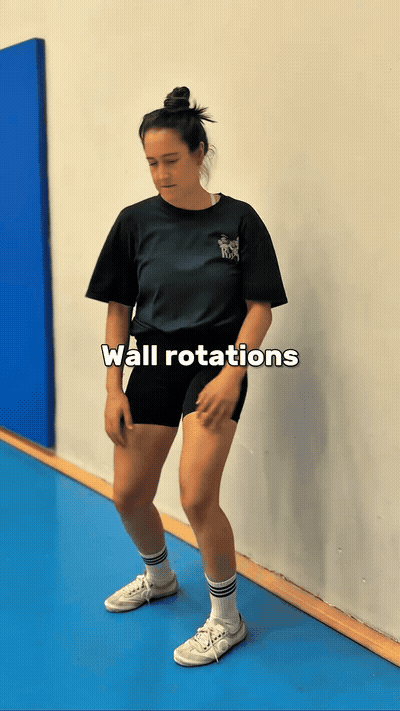
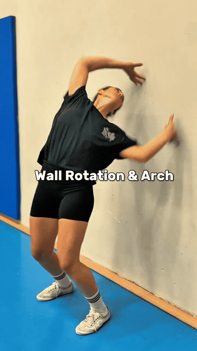
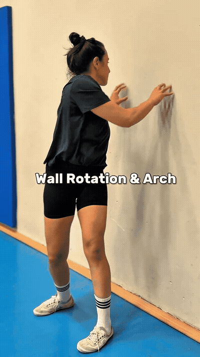
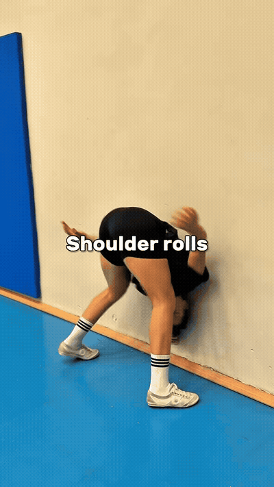

Rotate the torso in a controlled range while using the wall as a positional reference. Keep the movement exploratory rather than forcing the shoulder or ribs toward the wall.

Combine thoracic rotation with a small amount of spinal extension. Treat the arch as an addition to the rotation, not a deep backbend.

Use the wall for support while moving into a deeper extension pattern. This is the most demanding progression in the reel; regress by reducing the angle and range.

Finish with gentle shoulder rolls and fluid upper-spine movement. Keep the neck relaxed and let the shoulders move without shrugging forcefully.
Slow beats deep. Use the creator's 45–60-second dose as a reference, but stay inside a controlled, comfortable range.
Regress the bridge. The wall bridge is optional and should be made shallower if the wrists, shoulders, or back cannot tolerate the position.
Pain is a stop signal. Stop for sharp pain, pinching, numbness, or radiating symptoms; this guide is movement reference, not diagnosis.